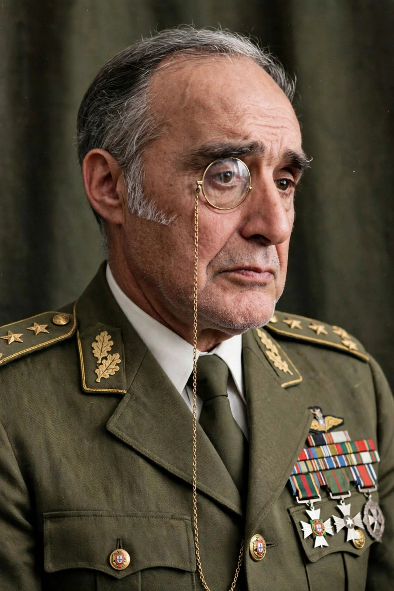

 | |
| President of Portugal | 15 May 1974 – 30 September 1974 |
|---|---|
| Born | 11 April 1910, Estremoz, Kingdom of Portugal |
| Died | 13 August 1996 (aged 86), Lisbon, Portugal |
| Military service | Portuguese Army; Governor and commander-in-chief in Guinea-Bissau, 1968–1973 |
António Sebastião Ribeiro de Spínola (11 April 1910 – 13 August 1996) was a Portuguese military officer and conservative politician who briefly served as President of Portugal in 1974, following the Carnation Revolution. A cavalry officer known for his monocle, he was a respected commander in the Portuguese Colonial War.
Spínola had a long army career that included service as an observer with German forces on the Eastern Front during the Second World War. From 1968 to 1973 he was governor and commander-in-chief in Portuguese Guinea, where he combined military operations with a "hearts and minds" policy of social and economic improvements, and pursued a secret meeting with Senegal's president Léopold Sédar Senghor about a negotiated settlement.
In February 1974 Spínola published Portugal e o Futuro (Portugal and the Future), arguing that the colonial wars could not be won militarily and that a political solution was required — a sensation under the authoritarian Estado Novo. Dismissed from his post as deputy chief of staff after refusing to attend a loyalty ceremony, he became a figurehead for discontented officers.
When the Armed Forces Movement overthrew Marcelo Caetano on 25 April 1974, Spínola received the surrender of the government and headed the Junta of National Salvation, becoming President of the Republic on 15 May 1974.
Spínola favoured a gradual transition and a federation with the African territories, but he was outmanoeuvred by more radical officers and the Portuguese Communist Party as the revolution moved left. After a failed attempt to rally his supporters in the "silent majority" demonstration, he resigned on 30 September 1974. Following a failed coup attempt on 11 March 1975, he fled to Brazil, later returning to Portugal, where he was politically rehabilitated and promoted to field marshal in 1987.